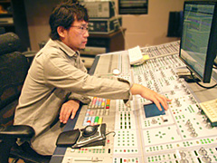
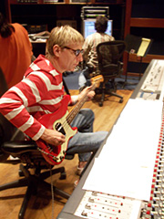
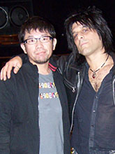
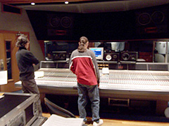

「クリエイターズ インタビュー」 第14回目は、
『ソニックと秘密のリング』サウンドディレクターの床井 健一を紹介！
プロフィール：
床井 健一（とこい けんいち）
セガ/NEソフト研究開発部/サウンドセクション2
1996年セガ入社
『ソニックアドベンチャー』シリーズ 楽曲制作,『スペースチャンネル5』シリーズ 楽曲制作,
『Phantasy Star Online Episode III C.A.R.D. Revolution』サウンドディレクター
『ソニックと秘密のリング』サウンドディレクター
今回は、2007年3月15日に発売しました『ソニックと秘密のリング』（以下、『ひみリン』）サウンドディレクターの
床井さんにお話しを伺いたいと思います。
まず、どのようなお仕事を担当されていたか、ご説明いただけますでしょうか？
今回サウンドディレクターとしてサウンド全般の設計、クオリティー及びスケジュール管理の他、レコーディング関連のアーティストブッキングや予算組み、スケジュール調整などなど、細かな所までディレクションを行っていました。
制作に於いては自分も含め2人で楽曲を作りつつ、劇伴楽曲を2人、ステージとイベント映像周りの効果音を5人、パーティーゲームの効果音を1人で制作しています。
出来上がった効果音を迫力のある音にする為に全ての波形にマスタリング（質感、バランス調整）を施したり。また、ボーカル録音や効果音録音、ショーやパブリシティ用ムービーのミックスダウンなど、エンジニアみたいなことも行っていましたね。
とにかく今回はスタジオにこもることが多かったので、孤独な作業が多かったですね（笑）。
床井さんはどういう経緯で『ソニックと秘密のリング』を手掛けることになったのでしょうか？
今タイトルのサウンドコンセプトテーマなどありましたらお聞かせ願えますか？
小川ディレクターから、
「ワイルドな炎を身にまとい、爆発的なスピードで打ち破る」
というソニック像を伝えられたので、それをキーワードにして、じゃあサウンドも同じイメージでいけないものかと色々練りました。
そして、シナリオを読んでいったら、ソニックには、
「変わってしまった状況、世界を打ち破る芯の強さ」
があったんです。
これはもう、一瞬でパンクロックの持つ「体制をぶち壊せ」みたいな姿勢の方に興味を持ちました。
強い心の音楽を表現しようと。
変えられたものをただ見ていたんじゃダメだ。打ち破らないと、もとに戻らない。そういう精神的なものに興味を持って取り組んでいきました。
また、今回の舞台背景でもあるアラビア音楽もとても重要でした。Le Club Bachrafさんというアラビア音楽の第一人者達を迎え入れられた事はとても大きかったです。アラビア音楽って、とても情熱的な音楽だと個人的に思っています。
パンクの「ぶち壊せ」的な姿勢とは反対に、包み込む感じで優しいし、とても繊細。あえて言うなら愛情の音楽。だからこの2つの音楽がお互いに助け合わなければいけないと考えていましたし、これらの内面的なものをうまく溶け込ませる事を念頭に置いて制作していました。
オープニングテーマソング「SEVEN RINGS IN HAND」（7つのリングを手に）も素晴らしい曲ですね！
制作秘話などありましたら教えていただけますか？

NYのスタジオでのWill Leeありがとうございます！
制作当初から考えていたのですが、
「変わってしまった世界を打ち破る強い心」
の音楽を表現出来るアーティストに協力して貰いたいと思い、長年協力を頂いているNYのプロダクション「BEAT ON BEAT」の Atsushi "SUSHI" Kosugi氏に連絡を取りました。
表現力豊かな上にハスキーかつアップテンポとスローバラードの2種類を歌える個性的なシンガーを探していたので、当然最初はなかなかボーカルが見つからなかったんです。欲しい声はロンドン在住ばかり。

Steve ConteとNYのスタジオにてそんな中、ベーシストのWill Lee氏から紹介して頂けた方がSteve Conte氏だったのです。
かなり驚きましたね。
Steve Conte氏は日本のアニメでは有名な方ですが、なにより「NEW YORK DOLLS」のギタリストとして現在活躍中ですので。
（余談ですが、「NEW YORK DOLLS」といえば、ロンドンパンクスに多大な影響を及ぼし、彼らをコピーしたのがピストルズだった事でも有名です。）
まさかここまでイメージにぴったりな方にお願いできるとは思っていなかったので是非お願いしたい、とコンタクトをして頂きました。
丁度イギリスツアーを行っていた最中でしたが、予定していたレコーディングにはNYに戻るとの事でスケジュールにもマッチして、大変ラッキーでした。

Atsushi "SUSHI" Kosugiと
エンジニアのDave Darlington収録一発目に聴いた声で僕も熊谷も鳥肌が立ってしまう程カッコ良かったです。
それから以前「Jam Films」というセガ制作の映画でエンディングテーマ収録＆ミックスを行う際にお世話になったデイブ・ダーリントン氏がエンジニアを務めて下さったりと、とてもプロフェッショナルな現場に立ち会えた事に大変感謝しております。